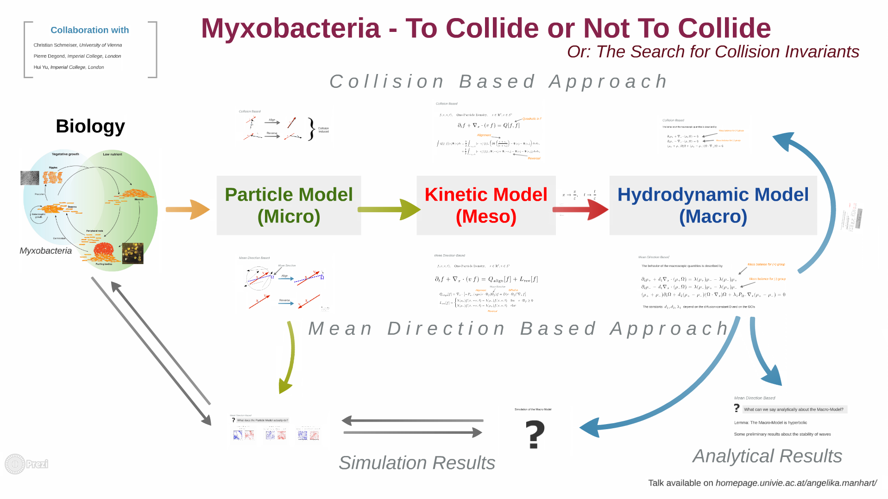

Waves and Aggregates in
Myxobacteria
Christian Schmeiser, University of Vienna, Austria
Pierre Degond, Imperial College, London, UK
Questions of Interest
What interaction mechanisms are necessary/sufficient to create waves and aggregations?
Can the movement be described adequately on a macroscopic level?
In what regimes do waves and aggregated form? How can the phase transitions be characterized?
Mathematical Methods
- Particle models, mean field models and macroscopic models
- Use of Generalized Collision Invariant to derive the macroscopic equations
- Stochastic simulations
- Boltzmann type interaction rules
Traveling Waves in Myxobacteria
Myxobacteria - To Collide or Not To Collide
